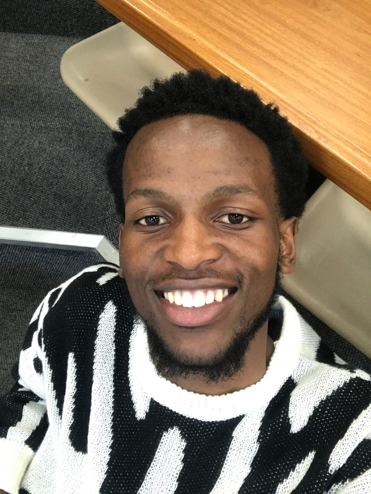

About Me

Final year Bachelor of Science in Information Technology (BSc IT) student at North West University. Passionate about software development, system design, and network simulation. I bring hands-on experience with programming, databases, and teamwork through academic projects and coursework.
Download My CV (PDF)
Education
- North West University
Final Year BSc in Information Technology – Expected 2025
- Mvenyane Senior Secondary School
Completed Matric (Grade 12) – 2022
Projects & Experience
- Blue-Caution-Auto-Dealership-System App
A C# based system to manage selling of cars.
View project:
GitHub Repo
- Network designer
A cisco packet based project to create business layer-out network design
View project:
Githup Repo
- Designed and implemented small-scale systems using Java, C++, and C#
- Developed and maintained SQL databases, including writing complex queries
- Built efficient software using data structures and algorithms
- Created C# applications using object-oriented programming principles
- Developed a Java application demonstrating inheritance, encapsulation, and polymorphism
Technical Skills
- Programming Languages: Java, C++, C#, Python, SQL
- Web and Software Development:
- Object-Oriented Programming
- GUI Development(Windows Forms,WPF)
- Web development using c# ASP.network
- System design
- Databases:SQL(MySQL), Database design & management
- SQL(MySQL, SQL Server
- Query Optimization
- Networking: Cisco Packet Tracer, Network Simulation & Design
- Tools: Git, Visual Studio, Version control with GitHub
- Concepts: System design & Architecture,
- Software engineering Principles
- Multithreading & Parallel Progaamming(C++, C#,Python)
- Frameworks & Technologies:
- C# ASP.NET Core
- Windows Forms Development
- Data Structures and Algorithms
Soft Skills
- Problem-Solving
- Team Collaboration (Agile-style teamwork)
- Communication (verbal & written)
- Adaptability & fast learning
- Time Management
- Attention to Detail
- Self-Motivation & initiative